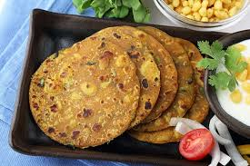

Gujarati breakfast recipes

Thepla
1. First prepare the fenugreek: Rinse 1 cup of methi leaves very well in cool running water. Then drain them thoroughly and dry with a kitchen towel or paper towel. Chop the leaves finely and set them aside.
2. In a large mixing bowl, add the following listed flours:
1 cup of whole wheat flour
¼ cup besan or gram flour – you can replace it with chickpea flour
¼ cup of pearl millet flour also known as bajra atta in Hindi
¼ cup sorghum flour called jowar flour or jowar atta
|